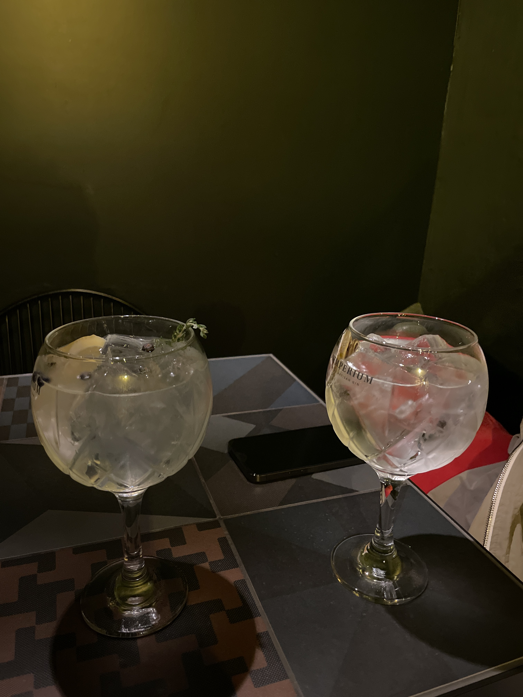

Tallinn's dining scene has exploded over the past few years. With two Michelin-starred restaurants, countless hidden gems, and a food culture that blends Nordic, Russian, and modern European influences, there's never been a better time to eat out in Estonia's capital.
But let's be honest — dining out frequently can get expensive. Whether you're a tourist trying to maximize your trip or a local who wants to explore more restaurants without breaking the bank, knowing where to find deals makes all the difference.
I've spent the last year mapping out every way to save money while dining in Tallinn. This guide covers everything: happy hours, membership programs, budget spots, and insider tips that locals use.
1. Best Happy Hour Deals
Happy hours in Tallinn typically run from 16:00-19:00 on weekdays, though some spots extend into weekends. Here are the ones worth knowing about:
Põhjala Tap Room
Craft Beer & CasualEstonia's most famous craft brewery offers happy hour pricing on their core range. Great industrial atmosphere in Noblessner.
Happy Hour: Mon-Fri 15:00-18:00 · Savings: ~30% off draft beers
Lee Brasserie
Modern European · Michelin RecommendedFormerly known as Leib, Lee Brasserie is a Michelin-recognized restaurant with a beautiful garden courtyard on Uus street. Worth following on Instagram for seasonal aperitivo hours and special offers.
When: Seasonal events, typically summer · Location: Uus 31
Local Tip
Many Old Town bars have hidden happy hours that aren't advertised online. Walk down Rataskaevu, Vene, or Pikk streets around 17:00 and check the chalkboards outside — you'll often find 2-for-1 cocktails that aren't listed anywhere.
2. Membership & Loyalty Programs
If you dine out regularly (or you're visiting for a week+), membership programs offer the best ongoing savings.
Nomi Pass
Full disclosure — this is us. Nomi Pass offers 15-20% off at partner restaurants across Tallinn. One membership covers your whole table, and it works at places ranging from casual lunch spots to fine dining.
If you're dining out 4+ times a month, the membership pays for itself quickly.
Get 15-20% Off at 50+ Tallinn Restaurants
Nomi Pass works at everything from casual lunch spots to Michelin-recognized fine dining.
Join the WaitlistBolt Food
Bolt's delivery app occasionally has restaurant deals, though these are primarily for delivery rather than dine-in. Good for when you want to eat at home but still get restaurant quality.
TableOnline Offers
The Estonian restaurant reservation platform sometimes features special set menus or discounts. Worth checking before booking anywhere.
Credit Card Programs
Some Estonian banks (particularly LHV and Swedbank) offer dining cashback or partner restaurant discounts through their premium cards. Check your card benefits — many people don't realize they have these.
3. Budget-Friendly Restaurants
You don't need deals to eat well in Tallinn on a budget. These spots are excellent value at full price:
III Draakon
Medieval TavernYes, it's touristy. Yes, it's also genuinely good and absurdly cheap. Elk soup in a clay bowl for €5, meat pies for €3. The catch? No utensils — you eat like a medieval peasant. Perfect for a quick Old Town lunch.
Average spend: €8-12 per person · Location: Town Hall Square
Kompressor
Pancake PubGiant savory and sweet pancakes that will fill you up for hours. A Tallinn institution. The ham and cheese pancake is the size of your head.
Average spend: €10-14 per person · Location: Rataskaevu 3
Pelmen
Handmade DumplingsAuthentic handmade pelmeni with multiple locations across Tallinn. The classic beef-pork dumplings are under €10 for a generous portion with sour cream.
Average spend: €8-12 per person · Locations: Vana-Viru 4 (Old Town), Balti Jaama Turg, T1 Mall
Balti Jaama Turg (Market)
Food MarketThe market near the train station has incredible variety. Vietnamese pho, Uzbek plov, Georgian khinkali, Italian pasta — all at market prices. Great for grazing.
Average spend: €6-15 per person · Location: Kopli 1
4. Lunch Deals Worth Knowing
Estonian lunch culture means many restaurants offer significantly better value at midday. The tradition of "business lunch" (ärilõuna) is strong.
What to Look For
- Set lunch menus: Many restaurants offer 2-3 course lunches for €12-18 that would cost €35+ at dinner
- Soup + bread combos: A filling lunch for €6-10 at many cafes
- Daily specials: Look for "päevapakkumine" signs outside restaurants
Best Lunch Deal in Tallinn?
Rataskaevu 16 — one of Tallinn's most beloved restaurants — offers their full quality for €15-20 at lunch, compared to €40+ for dinner. Same kitchen, same ingredients, dramatically lower price. Book ahead.
5. Fine Dining on a Budget
Tallinn has two Michelin-starred restaurants (180° by Matthias Diether with two stars, and NOA Chef's Hall with one), plus dozens of Michelin-recommended spots. Here's how to experience them without the full price tag:
Tasting Menu Alternatives
- Lunch tasting menus: Many fine dining spots offer shorter tasting menus at lunch for 40-50% less
- Bar seating: Some restaurants offer à la carte at the bar when the main dining room requires a tasting menu
- Wine pairing skip: Wine pairings can double the bill. Order a bottle to share instead
Michelin-Quality, Non-Michelin Prices
Rado
Modern European · Michelin RecommendedMinimalist, ingredient-focused cooking in Old Town. Michelin recognized but priced like a neighborhood bistro. The menu changes daily based on what chef Radoslav Mitro finds at the market.
Average spend: €40-60 per person · Location: Vene 7 · Hours: Mon-Sat 12:00-23:00
Fotografiska
New Nordic · Michelin RecommendedInside the photography museum in Telliskivi. Sustainable, seasonal cooking that punches above its price point.
Average spend: €45-65 per person · Location: Telliskivi 60a
6. Best Neighborhoods for Value
Location matters. Old Town is beautiful but has the highest prices and most tourist traps. Here's where to go for better value:
Telliskivi Creative City
The former factory complex has become Tallinn's hipster hub. Industrial atmosphere, creative restaurants, lower prices than Old Town. Start at F-hoone and explore.
Kalamaja
The colorful wooden houses hide excellent neighborhood restaurants. More locals than tourists, prices to match. Walk down Telliskivi or Kotzebue streets.
Noblessner
The new waterfront development has upscale restaurants with views, but also casual spots. Lore Bistroo for affordable fish soup with a sea view.
Rotermann Quarter
Modern architecture between the port and Old Town. Business lunch deals during the week, good international variety.
7. Insider Tips
After a year of eating my way through Tallinn, here's what I wish I knew from the start:
- Book ahead, always. Popular spots like Rataskaevu 16 fill up days in advance. Even "casual" restaurants benefit from reservations.
- Weekday vs weekend. Lunch deals disappear on weekends. Plan your budget meals Monday-Friday.
- Tipping is optional. Estonian restaurants don't expect American-style tips. 5-10% for great service is appreciated but not required.
- Check Instagram. Many restaurants announce specials, events, and deals on Instagram that don't appear anywhere else.
- Ask about the daily special. Even if it's not on the menu, many restaurants have off-menu specials that are better value.
- Water is usually free. Unlike some European countries, tap water is drinkable and most restaurants will provide it free.
The Bottom Line
You can eat incredibly well in Tallinn at every price point. Budget travelers can eat for €10-15 per meal with a little research. Regular diners can stretch their budget 20-30% with happy hours and membership programs. And even fine dining is accessible if you know when to go.
Keep Exploring
This guide will be updated as new deals emerge and restaurants change. Bookmark it and check back, or join the Nomi Pass waitlist to get updates and exclusive member deals delivered to your inbox.
Never Miss a Deal
Join Nomi Pass to get 15-20% off at restaurants across Tallinn, plus weekly updates on new spots and deals.
Join the Waitlist